3. Keyboard focus on bar buttons
The bar zeroes box-shadow too, so play, mute, fullscreen, and toolbar toggles showed no keyboard focus. After: a 2px ring.
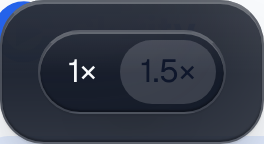
no focus ring
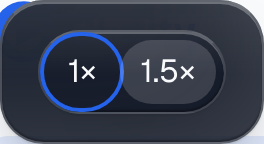
2px ring

no focus ring
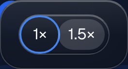
2px ring
Screenshots from a logged-in browser. Before is production. After is PR 679 running locally. Light and dark are the app's own theme, driven by the OS colour scheme. Contrast is measured from rendered pixels.
Found by the independent review. The surface rules for these two tiers set box-shadow for depth, which is where Button draws its focus ring, so no outline or default Button in the app showed keyboard focus. That includes production today. After: a 2px ring, the same one the bar uses.
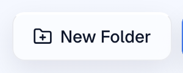
New Folder: no focus ring
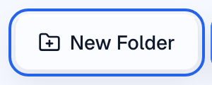
New Folder: 2px ring
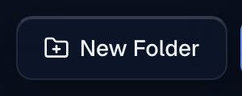
New Folder: no focus ring
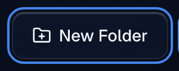
New Folder: 2px ring
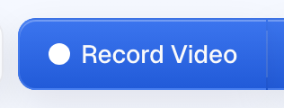
Record Video: no focus ring
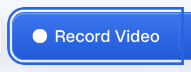
Record Video: 2px ring
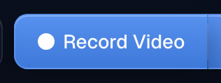
Record Video: no focus ring
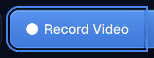
Record Video: 2px ring
Where the pill actually lives. Same tint and ink as the old pill, and contrast is unchanged.
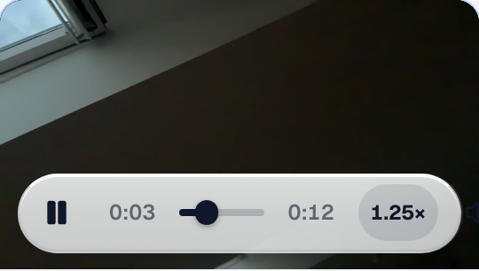
pressed 1.25× · 7.9:1
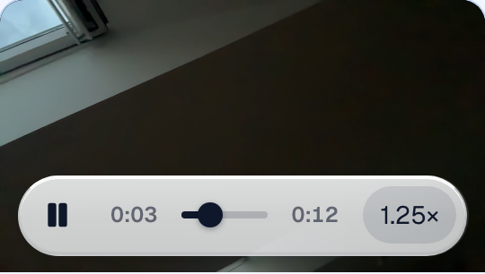
pressed 1.25× · 7.9:1
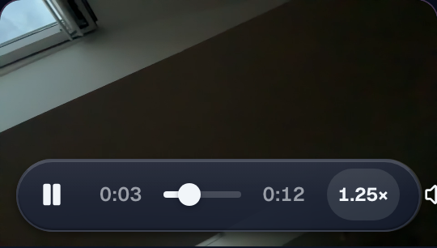
pressed 1.25× · 12.22:1
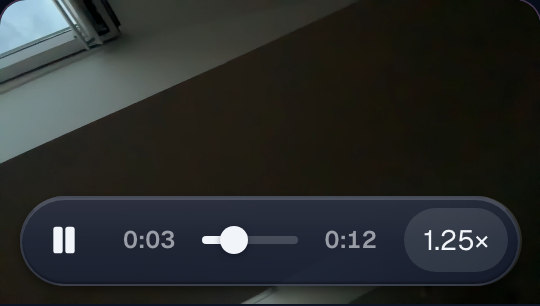
pressed 1.25× · 12.27:1
The bar zeroes box-shadow too, so play, mute, fullscreen, and toolbar toggles showed no keyboard focus. After: a 2px ring.

no focus ring

2px ring
no focus ring

2px ring
Found by the review. Without a fix, ghost hover turns the text near-black on the dark picker in light mode. After: hover keeps light text and uses the picker's own tint. The hovered tab is the right-hand one.
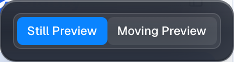
hover 6.06:1 · rest 4.8:1
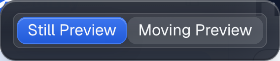
hover 5.32:1 · rest 7.14:1
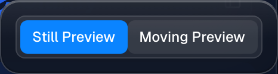
hover 11.57:1 · rest 8.19:1
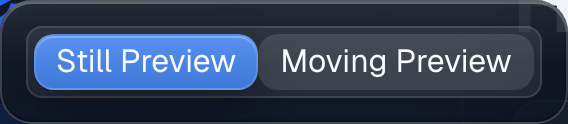
hover 9.75:1 · rest 14.09:1
Found by the review. Button defaults do not wrap, so a long crumb would have overflowed a phone screen. After: it wraps as before.
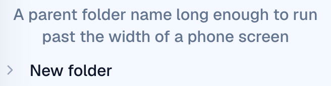
wraps, no overflow
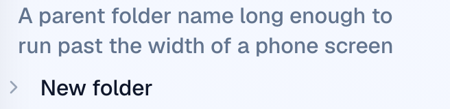
wraps, no overflow
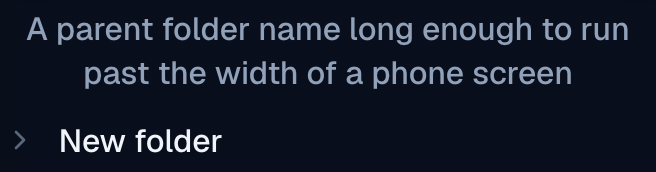
wraps, no overflow
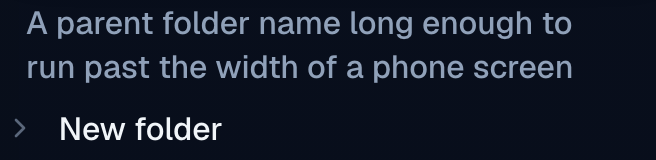
wraps, no overflow
Preventive. No real toolbar sits on dark media chrome today. This is the setting the first 7A comparison page used, which is why its pressed text was unreadable. After this PR the bar owns its pressed text colour, so the problem cannot come back if a toolbar is ever placed there. The same rule keeps pressed toggles consistent under journey theme presets.

pressed · 1.75:1
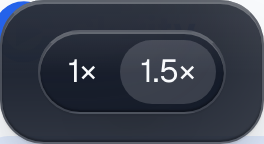
pressed · 9.35:1
pressed · 10.22:1
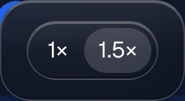
pressed · 10.7:1
PR: https://github.com/Clarity-Video-HQ/clarity/pull/679. Sections 3, 4 and 6 inject controls with the real Button class strings into the logged-in page, so the app's real stylesheet applies.